Change analysis for Japan for PRIMAP-hist v2.7_final compared to
v2.6.1_final
Overview over
emissions by sector and gas
The following figures show the aggregate national total emissions
excluding LULUCF AR6GWP100 for the country reported priority scenario.
The dotted linesshow the v2.6.1_final data.
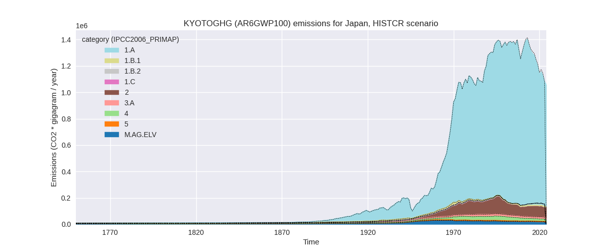
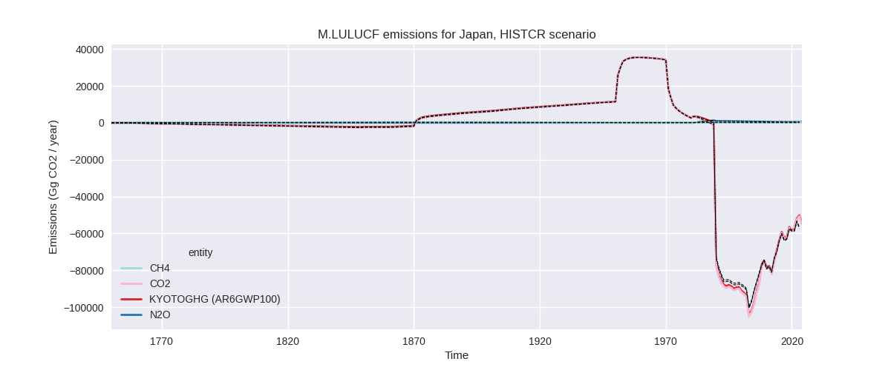
The following figures show the aggregate national total emissions
excluding LULUCF AR6GWP100 for the third party priority scenario. The
dotted linesshow the v2.6.1_final data.
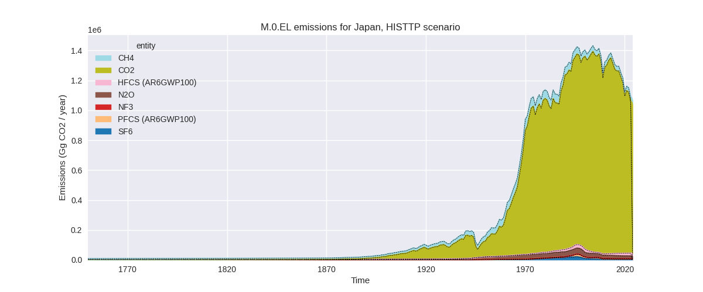
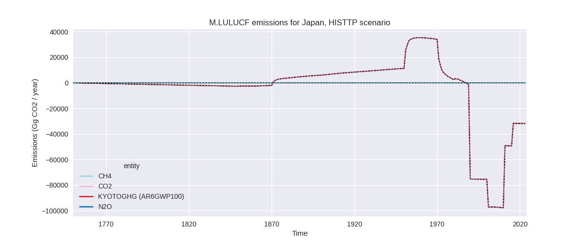
Overview over changes
In the country reported priority scenario we have the following
changes for aggregate Kyoto GHG and national total emissions excluding
LULUCF (M.0.EL):
- Emissions in 2023 have changed by -0.2%% (-2113.10 Gg CO2 / year)
- Emissions in 1990-2023 have changed by -0.7%% (-8770.34 Gg CO2 / year)
In the third party priority scenario we have the following changes
for aggregate Kyoto GHG and national total emissions excluding LULUCF
(M.0.EL):
- Emissions in 2023 have changed by 1.2%% (12926.10 Gg CO2 / year)
- Emissions in 1990-2023 have changed by 0.0%% (400.11 Gg CO2 / year)
Most
important changes per scenario and time frame
In the country reported priority scenario the
following sector-gas combinations have the highest absolute impact on
national total KyotoGHG (AR6GWP100) emissions in 2023
(top 5):
- 1: 2, HFCS (AR6GWP100) with -17937.75 Gg CO2 / year (-32.7%)
- 2: 1.A, CO2 with 17739.08 Gg CO2 / year (1.9%)
- 3: 4, CO2 with -1031.11 Gg CO2 / year (-9.6%)
- 4: M.AG.ELV, N2O with -813.09 Gg CO2 / year (-12.9%)
- 5: 2, N2O with -396.43 Gg CO2 / year (-44.0%)
In the country reported priority scenario the
following sector-gas combinations have the highest absolute impact on
national total KyotoGHG (AR6GWP100) emissions in
1990-2023 (top 5):
- 1: 2, HFCS (AR6GWP100) with -5642.68 Gg CO2 / year (-18.9%)
- 2: 4, CO2 with -1850.60 Gg CO2 / year (-13.2%)
- 3: 1.A, CO2 with -1118.88 Gg CO2 / year (-0.1%)
- 4: M.AG.ELV, N2O with -132.63 Gg CO2 / year (-1.9%)
- 5: 2, N2O with -121.65 Gg CO2 / year (-3.1%)
In the third party priority scenario the following
sector-gas combinations have the highest absolute impact on national
total KyotoGHG (AR6GWP100) emissions in 2023 (top
5):
- 1: 1.A, CO2 with 13282.15 Gg CO2 / year (1.4%)
- 2: 2, N2O with -432.13 Gg CO2 / year (-28.4%)
- 3: 2, CO2 with 83.57 Gg CO2 / year (0.1%)
- 4: 1.B.3, CO2 with -6.99 Gg CO2 / year (-3.5%)
- 5: 1.B.3, CH4 with -0.46 Gg CO2 / year (-4.1%)
In the third party priority scenario the following
sector-gas combinations have the highest absolute impact on national
total KyotoGHG (AR6GWP100) emissions in 1990-2023 (top
5):
- 1: 1.A, CO2 with 489.40 Gg CO2 / year (0.0%)
- 2: 2, N2O with -122.70 Gg CO2 / year (-3.0%)
- 3: 2, CO2 with 33.63 Gg CO2 / year (0.0%)
- 4: 1.B.3, CO2 with -0.21 Gg CO2 / year (-0.1%)
- 5: 1.B.3, CH4 with -0.01 Gg CO2 / year (-0.1%)
Notes on data changes
Here we list notes explaining important emissions changes for the
country.
- Data from BTR1 has been replaced by data from the 2025 National
Inventory Submission. This leads to changes in several sectors and gases
which cancel out and lead to a small change in total emissions.
- The main changes for 2023 are a 1.9% increase in energy CO2
emissions where 2023 growth rates in the CR data are higher than the
growth rates in EI2024 used for extrapolation in PRIMAP-hist v2.6.1 and
a 33% decrease in HFC emissions which is due to a downward revision of
emissions from refrigeration and air conditioning. The HFCs decrease
affects all years after 2001. For 2023 these two changes cancel each
others influence on total emissions.
- Waste CO2 emissions are lower for all years because of updated
emissions factors for waste incineration CO2 emissions.
- N2O from M.AG.ELV is lower after 2016 because of lower emissions
from agricultural soils, especially indirect emissions and organic
fertilizers.
- N2O in 2.E is much lower for all years because the emissions factor
for “integrated circuit or semiconductor” has been changed to a fourth
of the original value. As there is no third party data for N2O in 2.E
this also affects the TP time-series.
- Changes in the TP scenario are very small and mainly come from the
updated EI data for energy CO2.
Changes by sector and gas
For each scenario and time frame the changes are displayed for all
individual sectors and all individual gases. In the sector plot we use
aggregate Kyoto GHGs in AR6GWP100. In the gas plot we usenational total
emissions without LULUCF.
country reported scenario
2023
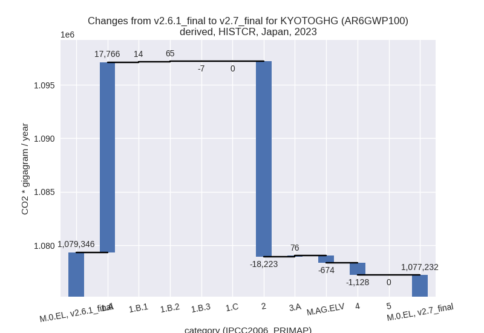
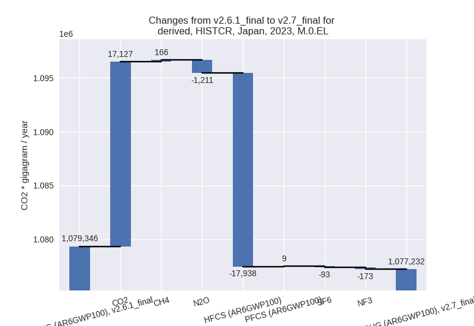
1990-2023
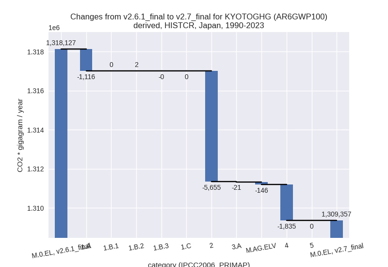
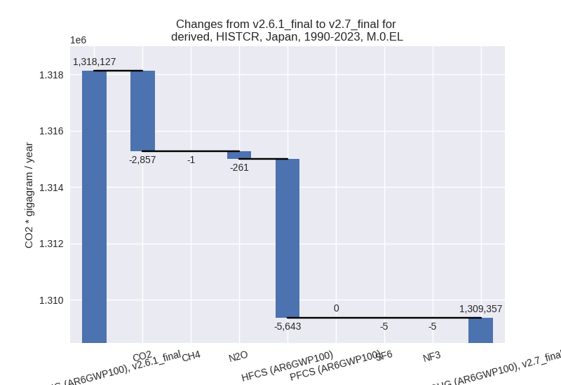
third party scenario
2023
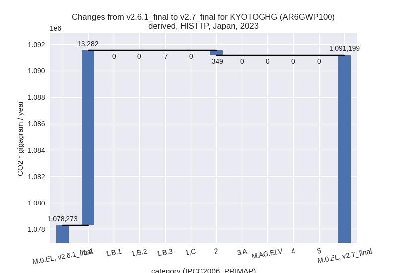
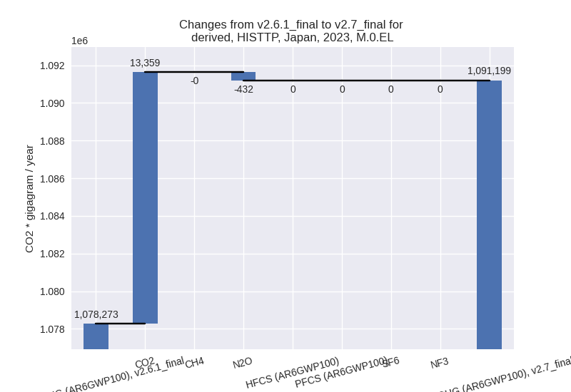
1990-2023
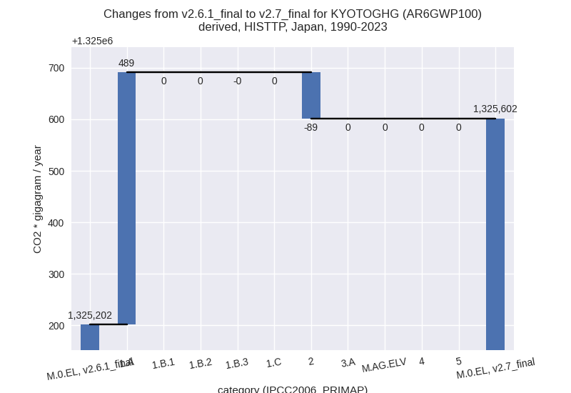
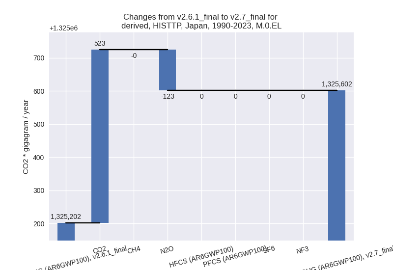
Detailed changes for the
scenarios:
country reported scenario
(HISTCR):
Most important changes
per time frame
For 2023 the following sector-gas combinations have
the highest absolute impact on national total KyotoGHG (AR6GWP100)
emissions in 2023 (top 5):
- 1: 2, HFCS (AR6GWP100) with -17937.75 Gg CO2 / year (-32.7%)
- 2: 1.A, CO2 with 17739.08 Gg CO2 / year (1.9%)
- 3: 4, CO2 with -1031.11 Gg CO2 / year (-9.6%)
- 4: M.AG.ELV, N2O with -813.09 Gg CO2 / year (-12.9%)
- 5: 2, N2O with -396.43 Gg CO2 / year (-44.0%)
For 1990-2023 the following sector-gas combinations
have the highest absolute impact on national total KyotoGHG (AR6GWP100)
emissions in 1990-2023 (top 5):
- 1: 2, HFCS (AR6GWP100) with -5642.68 Gg CO2 / year (-18.9%)
- 2: 4, CO2 with -1850.60 Gg CO2 / year (-13.2%)
- 3: 1.A, CO2 with -1118.88 Gg CO2 / year (-0.1%)
- 4: M.AG.ELV, N2O with -132.63 Gg CO2 / year (-1.9%)
- 5: 2, N2O with -121.65 Gg CO2 / year (-3.1%)
Changes in the main sectors for aggregate KyotoGHG (AR6GWP100)
are
- 1: Total sectoral emissions in 2022 are 984682.51
Gg CO2 / year which is 87.7% of M.0.EL emissions. 2023 Emissions have
changed by 1.9% (17836.73 Gg CO2 /
year). 1990-2023 Emissions have changed by -0.1% (-1113.66 Gg CO2 / year).
- 2: Total sectoral emissions in 2022 are 86116.50 Gg
CO2 / year which is 7.7% of M.0.EL emissions. 2023 Emissions have
changed by -18.2% (-18223.47 Gg CO2
/ year). 1990-2023 Emissions have changed by -5.4% (-5655.29 Gg CO2 / year). For 2023
the changes per gas
are:
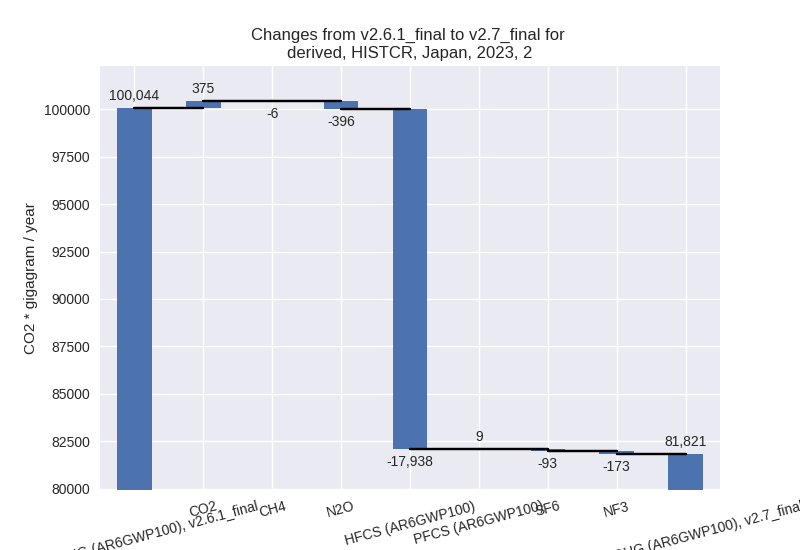
For 1990-2023 the changes per gas
are:
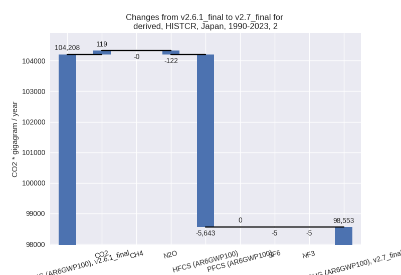
- M.AG: Total sectoral emissions in 2022 are 32795.78
Gg CO2 / year which is 2.9% of M.0.EL emissions. 2023 Emissions have
changed by -1.8% (-598.57 Gg CO2 /
year). 1990-2023 Emissions have changed by -0.5% (-166.79 Gg CO2 / year).
- 4: Total sectoral emissions in 2022 are 16748.54 Gg
CO2 / year which is 1.5% of M.0.EL emissions. 2023 Emissions have
changed by -6.5% (-1127.83 Gg CO2 /
year). 1990-2023 Emissions have changed by -7.0% (-1834.60 Gg CO2 / year). For 2023
the changes per gas
are:
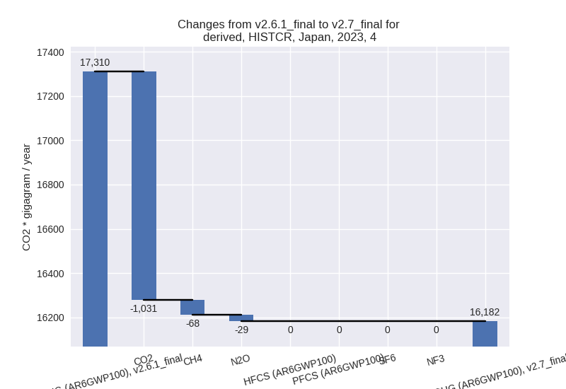
For 1990-2023 the changes per gas
are:
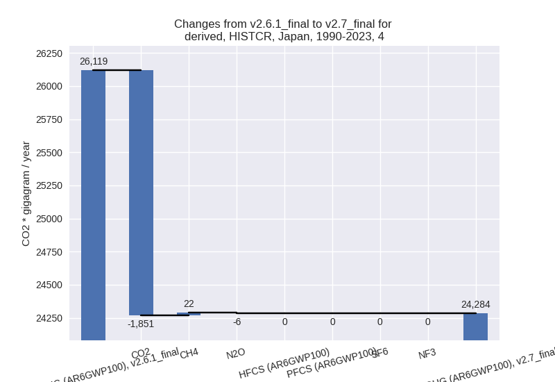
- 5: Total sectoral emissions in 2022 are 2196.16 Gg
CO2 / year which is 0.2% of M.0.EL emissions. 2023 Emissions have
changed by 0.0% (0.00 Gg CO2 /
year). 1990-2023 Emissions have changed by 0.0% (0.00 Gg CO2 / year).
third party scenario (HISTTP):
Most important changes
per time frame
For 2023 the following sector-gas combinations have
the highest absolute impact on national total KyotoGHG (AR6GWP100)
emissions in 2023 (top 5):
- 1: 1.A, CO2 with 13282.15 Gg CO2 / year (1.4%)
- 2: 2, N2O with -432.13 Gg CO2 / year (-28.4%)
- 3: 2, CO2 with 83.57 Gg CO2 / year (0.1%)
- 4: 1.B.3, CO2 with -6.99 Gg CO2 / year (-3.5%)
- 5: 1.B.3, CH4 with -0.46 Gg CO2 / year (-4.1%)
For 1990-2023 the following sector-gas combinations
have the highest absolute impact on national total KyotoGHG (AR6GWP100)
emissions in 1990-2023 (top 5):
- 1: 1.A, CO2 with 489.40 Gg CO2 / year (0.0%)
- 2: 2, N2O with -122.70 Gg CO2 / year (-3.0%)
- 3: 2, CO2 with 33.63 Gg CO2 / year (0.0%)
- 4: 1.B.3, CO2 with -0.21 Gg CO2 / year (-0.1%)
- 5: 1.B.3, CH4 with -0.01 Gg CO2 / year (-0.1%)
Changes in the main sectors for aggregate KyotoGHG (AR6GWP100)
are
- 1: Total sectoral emissions in 2022 are 1024316.10
Gg CO2 / year which is 89.0% of M.0.EL emissions. 2023 Emissions have
changed by 1.4% (13274.70 Gg CO2 /
year). 1990-2023 Emissions have changed by 0.0% (489.19 Gg CO2 / year).
- 2: Total sectoral emissions in 2022 are 88251.02 Gg
CO2 / year which is 7.7% of M.0.EL emissions. 2023 Emissions have
changed by -0.4% (-348.56 Gg CO2 /
year). 1990-2023 Emissions have changed by -0.1% (-89.07 Gg CO2 / year).
- M.AG: Total sectoral emissions in 2022 are 23684.52
Gg CO2 / year which is 2.1% of M.0.EL emissions. 2023 Emissions have
changed by 0.0% (0.00 Gg CO2 /
year). 1990-2023 Emissions have changed by 0.0% (0.00 Gg CO2 / year).
- 4: Total sectoral emissions in 2022 are 12075.76 Gg
CO2 / year which is 1.0% of M.0.EL emissions. 2023 Emissions have
changed by 0.0% (0.00 Gg CO2 /
year). 1990-2023 Emissions have changed by 0.0% (0.00 Gg CO2 / year).
- 5: Total sectoral emissions in 2022 are 2196.16 Gg
CO2 / year which is 0.2% of M.0.EL emissions. 2023 Emissions have
changed by 0.0% (0.00 Gg CO2 /
year). 1990-2023 Emissions have changed by 0.0% (0.00 Gg CO2 / year).